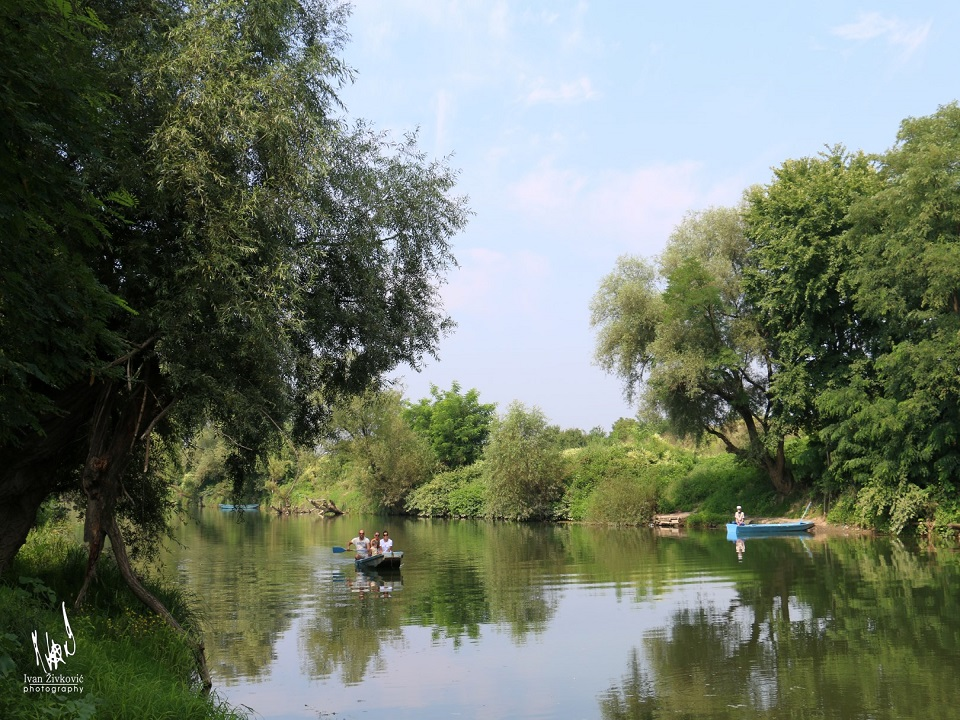
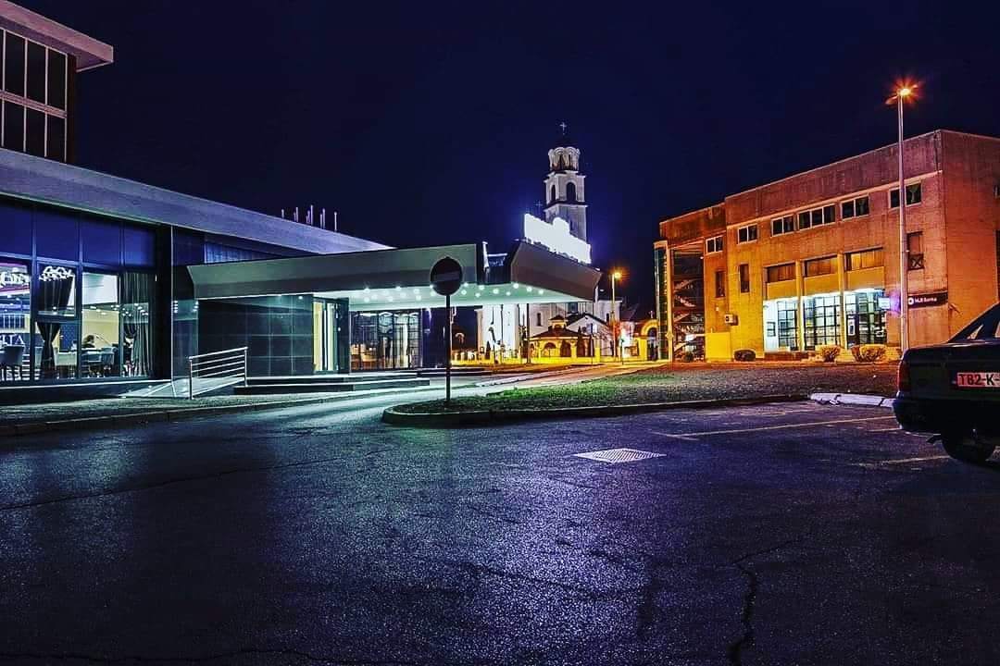
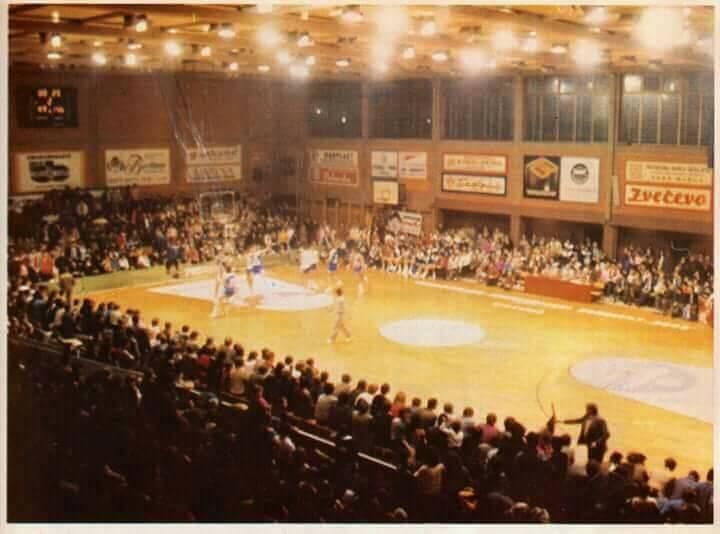
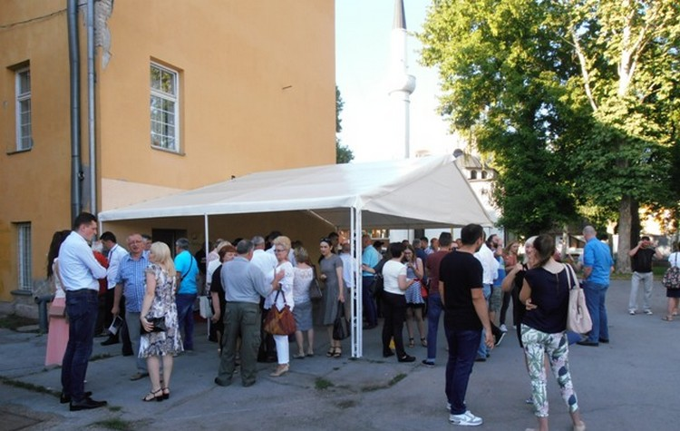
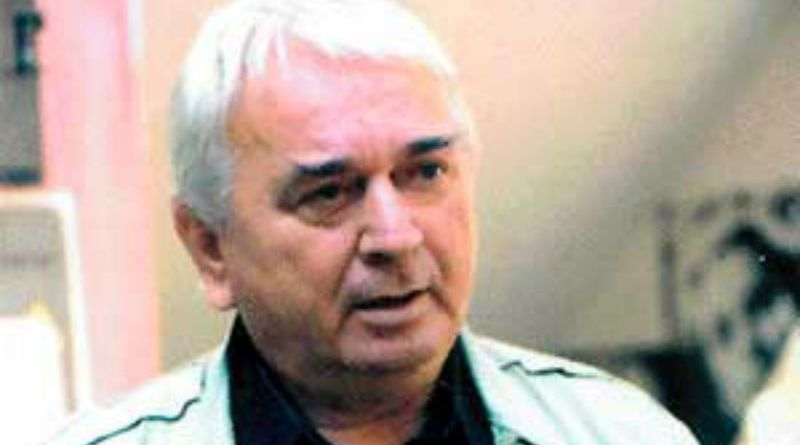
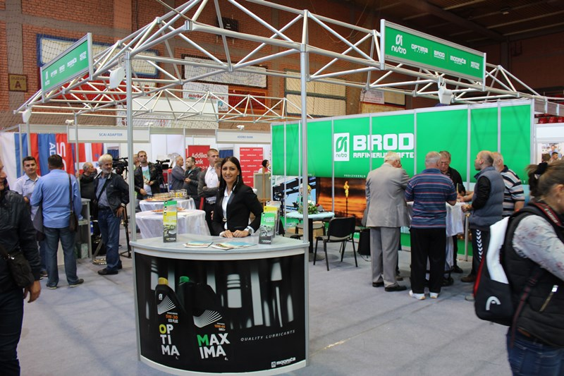

Prirodne ljepote i izletišta
Kao prirodne vrijednosti mogu prepoznati: područje sliva rijeke Ukrine, srednji tok rijeke Save, prirodne ljepote ravnice i blagi brdski predjeli, arheološka nalazišta i spomenici
Zaštićeni prirodni predjeli na području opštine Brod prema Prostornom plana Republike Srpske: Vučjak (područje opština Brod i Derventa) Močvare Posavine (na području opština Brod, Šamac,Gradiška,Srbac i Bijeljina)
Na teritoriji opštine Brod se nalazi i nekoliko izletišta, među kojima su najpoznatije izletište „Dubokovac“ udaljen 12 km, od grada, „Poloj“ koji je udaljen oko 3 km i novoizgrađeni vidikovac „Vrela“ .
Rijeka Sava i rijeka Ukrina: -šetalište Duška Trifunovića (pjesnik rođen u Brodu) i biciklistička staza, -kajak- kanu klub Brod,
-ribolov (ribolovna staza na obali rijeke Save). Vučijak: -izletište Dubokovac i Manastir Svete Petke, -izletište Sedam vukova, -lovište LU Vučijak. PRIRODNI FENOMEN - Cvjetanje rijeke „Ukrine“
Fenomen Vodenog cvijeta je izuzetno interesantna i rijetka pojava koja se javlja u vodotoku Ukrine. Krajem avgusta u ljetnim večerima iznad i oko vodotoka pojavljuju se iz vode milioni bijelih leptirića koji stvaraju neobičan dekor, kao da je riječ o snježnim pahuljicama. Na području opštine brod najznačajnije „cvjetanje“ se odvija u selu Zborište.
Nakon tri godine života u obliku larve, na dnu rijeke, ovi insekti se pare iznad vode i žive svega nekoliko sati. Na prostoru bivše Jugoslavije, od svih rijeka cvjetale su još samo Morava, Tisa i Korana. Zagađenje vode otjeralo je leptiriće iz Morave i Tise, a na Korani je znatno smanjena ova pojava, tako da je rijeka Ukrina ostala jedna od rijetko čistih voda sa svojim fenomenom Vodenog cvijeta. Vjerski, kulturni i sportski objekti
Istorijske građevine i spomenici od značaja za Republiku Srpsku po Prostornom planu RS su: Liješće - Crkva silaska Sv. Duha na apostole Hram Pokrova presvete Bogorodice u Brodu.
Vjerski objekti u Brodu: -U glavnoj ulici, nekadašnjoj Maršala Tita, a danas Svetog Save, nalaze se pravoslavna crkva: hram Pokrova Presvete Bogorodice, katolička crkva: župna crkva Svetog Ilije i Husein-begova džamija.
Sportsko kulturni centar: -dve dvorane za sve vrste dvoranskih sportova, dvorana za tenis, sauna, kuglana. Velika dvorana se između ostalog koristi za održavanje godišnjeg ponoćnog turnira u malom fudbalu. -Gradski stadion sa glavnim nekoliko pomoćnih terena za odigravanje fudbalskih utakmica sa uređenim tribinama, svlačionicama i potrebnim prostorom koji se pažljivo održava. -gradski bazeni sa restoranomr rade u sezoni od juna do kraja septembra sa bogatim zabavnim sadržajem, na velikom, srednjem i bazenom za najmlađe, uz organizovanu školu plivanja. Restoranska sala se, pored redovnog ugostiteljskog rada u sezoni, iznajmljuje za organizovanje svečanosti, proslava vjenčanja i sl.
Događaji i manifestacije
Brod je prepoznatljiv po dugoj tradiciji njegovanja folklora, narodne nošnje, običaja, igre i pjesme. U Brodu postoji nekoliko kulturno-umjetničko društavo i udruženja koja su nosioci pomenutih aktivnosti najaktivniji su svakako KUD „Duško Trifunović“ i KUD „Liješće“ iz Liješća.Udruženje žena „Đurđevak“ Liješće njeguje i čuva od zaborava tradiciju običaje i stare zanate našeg područja.
Januar 12 – 14. 1. 2018. godine „39. Ponoćni turnir u malom fudbalu“ Godišnji koncert KUD „Duško Trifunović“
Februar Rukometni turnir za žene
April Vaskršnji koncert KUD „Liješće“
Jun 24 – 30. 6. Akvarelistička kolonija „Sava“
Jul 21. 7. Memorijalna ragata „Stipica Stanić“ na rijeci Savi
Septembar 13 – 14. 9. Dani Duška Trifunovića 14 – 15. 9. Sajam privrede 15. 9. Gastro susreti,
Oktobar 7. 10. Dan Opštine 14. 10. Krsna slava Opštine „Pokrov Presvete Bogorodice“
Ponoćni turnir u malom fudbalu je jedinstvena sportska manifestacija na prostorima bivše Jugoslavije. Počinje u petak u podne kvalifikacionim utakmicama, igra se danonoćno oko 60 sati bez prekida, a završava se finalnom utakmicom, koja se igra u nedjelju naveče, oko ponoći. Prvi put, turnir je u ovom obliku organizovan 1979. godine i od tada do danas održavan je bez prekida. Rekordan broj ekipa učesnica bio je u januaru 1991. godine, kada je nastupilo 128 ekipa. Posljednjih godina igra se u više uzrasnih kategorija, i obuhvata takmičenje u konkurenciji fudbalerki.

Akvarelistička kolonija „Sava“ u Brodu osnovana je 1980. Godine, a održava se u junu mjesecu. Pokretači ove vrijedne kulturne manifestacije bili su Đurđa Vilagoš, Krunoslav Kern i Muhamed – Hamo Fejzić. Za kratko vrijeme svog postojanja Kolonija je počela da okuplja sve najkvalitetnije akvareliste na prostorima tadašnje zajedničke države. Ideju je u početku podržala Rafinerija nafte, koja je nepune tri decenije bila pokrovitelj ove manifestacije. Kolonija nije prestajala sa radom ni za vrijeme rata i raspada SFRJ. U to doba na njoj su učestvovali najpoznatiji likovni umjetnici iz Republike Srpske i Savezne republike Jugoslavije, kasnije Srbije i Crne Gore. Od tri osnivača, danas, nažalost, među živima više nema Krune Kerna i Hame Fejzića. Slikari Zdravko Mandić, Grujica Lazarević, Milorad Maravić, Đorđe Simić i mnogi drugi poznati likovni umjetnici sa ovih prostora, zajedno sa jedinim živim osnivačem Kolonije, Đurđom Vilagoš, odmah u poratnim godinama daju novi impuls i vraćaju stari sjaj ovoj manifesataciji. Iako su prilike u kojima se sada stvara dosta drugačije od pređašnjih, ne nedostaje entuzijazma koji stalno stvara novi proizvod. Posljednjih nekoliko godina organizaciju AK „Sava“ na sebe preuzima opština Brod i JU „Turistička organizacija opštine Brod“, koja je naslijedila ogromnu odgovornost ali i bogat fundus blizu 1000 umjetničkih radova koji sa ponosom izlaže javnosti. U tu svrhu osposobljena je Gradska galerija. Od 15. do 30. Novembra 2017. godine postavka 38 Akvarelističke kolonije je bila izložena u Muzeju železnica Srbije u Beogradu.
Međunarodnu memorijalnu regatu „Stjepan Stanić“ koja se održava u julu mjesecu od 2011. godine na rijeci Savi organizuje je Kajak kanu klub „Premium“ u saradnji sa opštinom Brod. Regata ima takmičarski karakter i u jednom svom dijelu boduje se kao ligaško takmičenje Premier lige BiH- za kajak i kanu na mirnim vodama. Učesnici regate su iz BiH, Hrvatske, Srbije i Republike Srpske. Broj takmičara koji veslaju u trideset i više trka kreće se oko dvije stotine. Ova sportska manifestacija ima značaj u sportskom, kulturnom i turističkom smislu ne samo za brodsku opštinu nego i Republiku Srpsku i BiH.
Dani Duška Trifunovića, manifestacija, koja se održava u septembru, posvećena je Dušku Trifunoviću, Brođaninu, rođenom 13. septembra 1933. godine u selu Sijekovac kod Broda. Bio je srpski književnik, pjesnik i televizijski autor, plodan stvaralac koji je stvorio dvadesetak knjiga poezije, četiri romana i nekoliko drama. Smatra se zaslužnim za stvaranje sarajevske rokenrol škole. Na televiziji je zapamćen kao autor emisije „Šta djeca znaju o zavičaju“.
Najveću slavu stekao je saradnjom sa rok grupom „Bijelo Dugme“, a iz te saradnje su se izrodili stihovi kao što su „Ima neka tajna veza“, „Šta bi dao da si na mom mjestu“, itd. Sem toga pisao je tekstove za „Indekse“, „Tešku Industriju“, Nedu Ukraden, Zdravka Čolića, Arsena Dedića, a poslednje pozato ime sa kojim je radio tekstove je Željko Joksimović (pjesma „Ima Nešto“). Ukupno je oko tristo njegovih pjesama komponovano i snimljeno.
Brodu je u nasleđe ostavio pjesmu „Balada o ravnici“ koja je i nezvanična himna ovog grada. U čast Duška Trifunovića šetalište uz rijeku Savu sa ponosom nosi njegovo ime, a duž šetališta su postavljene mermerne table sa isklesanim stihovima našeg pjesnika. Sajam privrede, poljoprivrede i turizma održava se polovinom septembra. Ova značajna privredna i kulturna manifestacija okuplja izlagače iz Republike Hrvatske, Srbije, Bosne i Hercegovine i Republike Srpske. Nekoliko desetina izlagača u velikoj dvorani Sportsko kulturnog centra u Brodu prezentuju svoje proizvode i usluge, razmjenjuje iskustva i kontakte u cilju poboljšanja vlastitog poslovanja. Sajam takođe posjećuju i mnogi zvaničnici, republički regionalni i lokalni mediji.
Gastro susreti su izuzetno popularna manifestacija koja se održava u septembru drugi dan Sajma privrede. Održavase u gradskom parku ispred Sportsko kulturnog centra u Brodu. Cilj manifestacije je očuvanje kulinarske tradicije našeg podneblja. Učesnici Gastro susreta takmiče se u pripremanju čobanca i fiša, dok udruženja građana i udruženja žena izlažu na štandovima tradicionalnu hranu našeg podneblja. Uz ugodnu atmosveru i tradicionalnu muziku Gastro susreti traju do kasnih večernjih sati. Gastro susreti se održavaju u organizaciji Opštine Brod, „Turističke organizacije opštine Brod“ i UŽ „Đurđevak“ Liješće.